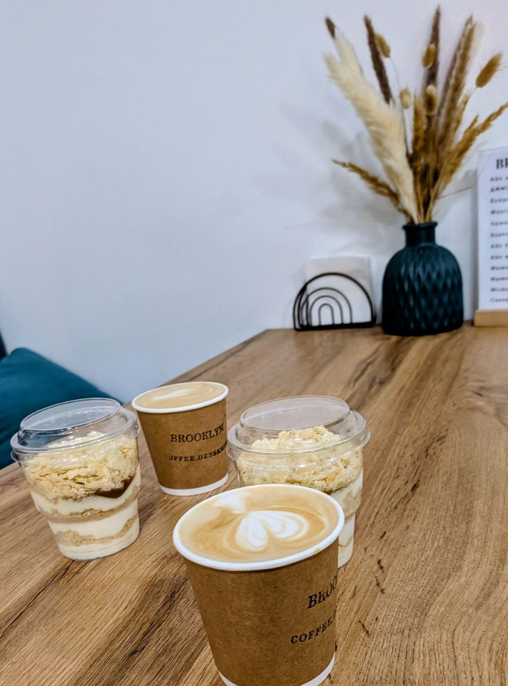

⬡ CYBERLAB / CASE 003
OSINT LAB · C-02
☕ Кавова справа
АРТЕФАКТ 02. На фото видно кав'ярню та брендовані предмети. Чи достатньо цього, щоб установити конкретне місце? Пройдіть перевірку доказів і складіть короткий OSINT-звіт. Назва міста не розкривається.
АРТЕФАКТ 02 / ФОТОГРАФІЯ

Вивчайте лише публічні ознаки закладу. Не шукайте особисті дані відвідувачів або працівників.
ЗАПИС 01 / 05
🔎 АЛГОРИТМ C-02: EXTRACT → SEARCH → SHORTLIST → COMPARE → CORROBORATE → ASSESS.
Знайдіть текстові й візуальні зачіпки, але не підміняйте ними докази.